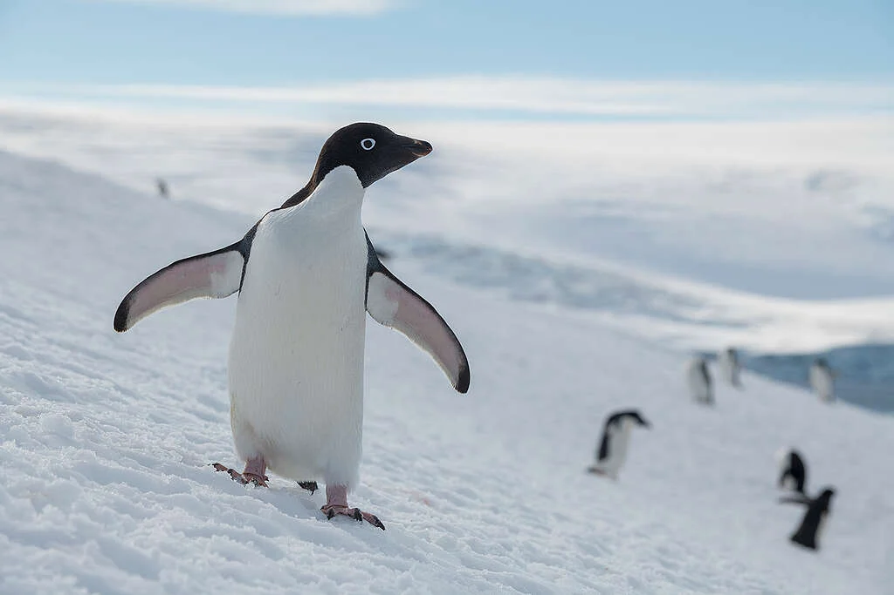

La Comisión del Océano Antártico vuelve a fracasar en acordar un plan de acción sobre la protección de los océanos

Santiago, 23 de junio de 2023 La Comisión del Océano Antártico una vez más no ha logrado encontrar un camino a seguir para proteger las aguas de la Antártida. La Comisión se reunió esta semana para una reunión especial entre sesiones regulares, sólo la tercera en los 41 años de historia de la Comisión, en un intento por romper el punto muerto en la creación de santuarios oceánicos antárticos.
La Comisión ha prometido crear una red de santuarios oceánicos en la Antártida, pero los intentos han sido bloqueados repetidamente por un pequeño número de miembros debido a que la Comisión confía en la toma de decisiones basada en el consenso. Esto permite que un solo estado miembro bloquee todo el progreso.
Chris Thorne de la campaña Protect the Oceans de Greenpeace dijo:
“Los miembros de la Comisión del Océano Antártico tuvieron la oportunidad esta semana de finalmente avanzar hacia la protección de la Antártida y hacer una contribución importante para proteger el 30% de los océanos para 2030. No lograron llegar a un consenso una vez más.”
“El sistema de toma de decisiones por consenso de la Comisión está fundamentalmente roto. Las decisiones en virtud del Tratado Global de los Océanos, que se adoptó esta semana en las Naciones Unidas, permiten votar las decisiones. Esto nos da esperanza, pero algo debe cambiar para que la Comisión cumpla con su responsabilidad de proteger el Océano Antártico.”
“Con menos de siete años hasta 2030, la ventana de tiempo que nos queda para actuar se está reduciendo. El Tratado Global de los Océanos permitirá la creación de santuarios oceánicos en alta mar y demuestra que la protección de los océanos es posible. Todos dependemos de océanos saludables. Los gobiernos deben ratificar el Tratado por la Conferencia de las Naciones Unidas sobre los Océanos en 2025 y proteger al menos el 30 % de los océanos para 2030”.

La reunión no logró acordar una hoja de ruta para el progreso de los santuarios oceánicos antárticos, el objetivo original de esta reunión. Debido a la falta de voluntad de compromiso de dos miembros, la Comisión ni siquiera pudo comprometerse a establecer eventualmente una red de áreas marinas protegidas.
Greenpeace pide acciones urgentes, incluido un compromiso político de alto nivel para romper el estancamiento de larga data en la Comisión del Océano Antártico sobre santuarios oceánicos. Los gobiernos también deben ratificar urgentemente el Tratado Global de los Océanos en la Conferencia de las Naciones Unidas sobre los Océanos en 2025.